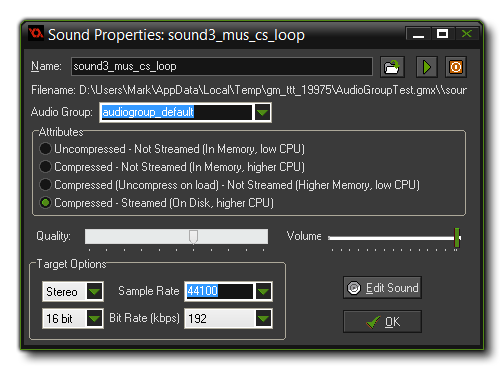

你可以使用 Resource 菜单或右键点击资源树选择 Create Sound 或使用工具栏上相应的按钮添加声音资源。无论以哪种方式都将打开下面的窗口:按下声音名称右边的 Load Sound 按钮。文件选择对话框将会弹出，你可以选择声音文件。只能 选择 wave 或者 MP3文件。通常 Wave 文件 (*.wav) 用于短的音效。尽管它们通常较大但播放时不需要任何类型的解码，会瞬间播放。你也可以同时播放多个 wave 文件。这就是为什么你应该使用 wave 文件作为音效的原因。
MP3 (*.mp3) 文件用于背景音乐，GameMaker: Studio 只允许同时播放 一个 音乐这些文件比 wave 文件小得多，但是有小的 CPU 消耗，因为它们在播放前会解码，因此同时只能播放一个 MP3 文件(不过，在你的游戏中可以有多个音乐曲目以便在需要时切换着使用)。
加载好文件后可以使用播放按钮预览音乐，这将循环播放音乐。这使得你可以使用窗口底部的音量按钮调整音量大小。也有停止按钮，所以你可以在任何时候停止预览。
注意: 老版本的 GameMaker 支持 MIDI 格式文件但是 GameMaker: Studio 并不支持。你不能再使用 MIDI，并且从老版本中导入这些文件可能会导致程序崩溃。这些文件应该在测试前被删除或替换！
声音窗口还有如下选项。
你可以将你的音频文件分到一个特定的 Audio group (音频组)。这需要在 Global Game Settings (游戏全局设置) 的 Audio Groups Tab (音频组选项卡) 设置，把音频资源放在一组更容易管理内存和控制音量。一旦音频文件被分到了一组，你就可以使用特定的音频组函数改变它们或从内存中加载/卸载它们。更多信息请查看 Audio Functions (声音函数)。注意，当其余的音频属性是特定的配置，音频组设置和它们的设置 not 一样，而是只使用音频组设置。
注意: 音频组只能与当前音频系统工作，但不会与传统音频工作。
上述文件类型是 Uncompressed (未压缩) 音频的默认配置。你也可以选择 Compressed (压缩) 音频。压缩会使得你所有的声音文件 (无论是 *.wav 还是 *.mp3) 被压缩成适用于所有平台的 Ogg Vorbis 格式的 *.ogg 文件。
这些文件占用空间较小，但是CPU开销较大，请自行取舍。
如果 你选择了 compressed 音频，你可以选择用 streamed 的方式播放或者 不是 。流式传输的声音未压缩，从磁盘按流实时播放。流媒体是最理想的，因为他减少了一次性解压整个文件的开销(可能会导致游戏暂停)，但是不推荐用于 CPU 消耗较小的简单音效。
如果你从 IDE 加载 *.ogg 或者 *.mp3 文件，你会看到 "品质" 滑块。这将会改变所使用的编码，从而减少 (或提高) 声音的最终品质。注意品质越高，文件越大，如果作用于本身就是低品质的音频文件，不会 提升品质，而只会使得游戏变得庞大。通常来说默认值适用于大多数游戏。
在品质的旁边，可以设置声音最大音量，即:如果滑块是 0.5，那么播放时就只有一半的声音。注意如果你打算使用传统声音系统播放音乐 (或工作于 HTML5 目标)，滑块是 初始 音量，可以通过适当的函数来改变。
Target Options 面板设置转换率。这些设置将会影响声音输出到目标平台 GameMaker: Studio 将会自动转换你的音频文件。一般默认设置 16 bit, 44100kHz and 192kbps 即可，但如果你希望你的音效质量较低、音乐质量较高，也可以改变设置以达到目的。
你还可以选择是否转换为单声道、立体声或 3D。如果你打算使用音频发射器功能来创建 3D 音效，你应该指明位置，否则在声音播放时将使用单声道或立体声。
注意: 质量越高文件越大，请自行取舍。
GameMaker: Studio 不内置声音编辑器。但是在 Editor Preferences (编辑器配置) 你可以选择你想使用的外部编辑器。如果设置妥当，你可以按下 Edit Sound 按钮打开外部编辑器。GameMaker: Studio 窗口会自动隐藏，关闭编辑器就会返回 (你必须在编辑器里保存好音频文件而不是 GameMaker: Studio 里)。
| Converted from CHM to HTML with chm2web Pro 2.85 (unicode) |